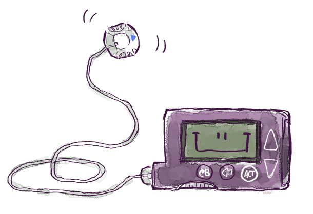

Сахарный диабет — хроническое заболевание, для которого характерно нарушение обмена углеводов. Это проявляется высокими показателями глюкозы крови, которые вызывают поражения кровеносных сосудов и внутренних органов. По каким причинам возникает это заболевание и на какие явные симптомы стоит обратить внимание, разбирем в этом материале.
Сахарный диабет первого типа может появляться по невыясненным обстоятельствам или быть вызван аутоиммунными причинами, когда при определенных условиях собственные иммунные клетки начинают разрушать ответственную за синтез инсулина ткань поджелудочной железы. При 1-м типе клетки, выделяющие инсулин (бета-клетки), умирают, вследствие чего он больше не синтезируется. Этот тип диабета требует введения в организм инсулина посредством инъекций, поэтому он называется инсулинозависимым сахарным диабетом. Чаще всего инсулинозависимый диабет первого типа проявляется уже в детском или подростковом возрасте, реже — в зрелом.
Среди основных первых симптомов этого заболевания можно выделить:
Одна из частых ситуаций инсулинозависимого диабета, при которой его диагностируют — кетоацитоз — является попыткой организма восполнить нехватку энергии сжиганием жира, при котором выделяются кетоновые тела. Присутствие в крови большого количества кетоновых тел опасно и проявляется следующими симптомами:
Часто к врачу обращаются только после появления первых симптомов кетоацитоза, а ведь это осложнение несет угрозу жизни. Поэтому важно знать и отслеживать появление первичных симптомов диабета у себя или своих близких, особенно детей.
Несмотря на то, что диабет является хроническим заболеванием (полное излечение пациента невозможно), вполне реально перевести течение болезни в контролируемое русло. При диагностированном диабете первого типа в абсолютном большинстве случаев назначается инсулинотерапия — введение гормона посредством инъекций. Введенный гормон организм использует для обработки поступающей глюкозы.
Виды инсулина разливаются в зависимости от продолжительности действия и их предназначении. Инсулин ультракороткого действия можно вводить за 15 минут до еды, непосредственно перед едой или сразу после еды, эффект продолжается до 5 часов. Эффект инсулина средней продолжительности действия продолжается обычно до 16 часов, длительного действия — до 36 часов, сверхдлительного действия — более 42 часов. Такой тип инсулина предназначен для контроля уровня глюкозы в крови между приемами пищи и ночью.
Инсулиновая помпа — это электронное устройство, обеспечивающее круглосуточное подкожное введение ультракороткого инсулина малыми дозами. У инсулиновой помпы есть два режима введения препарата: непрерывная подача инсулина в микродозах (базальная скорость) и определяемая, программируемая пациентом болюсная скорость. Первый режим имитирует фоновую секрецию инсулина и фактически заменяет применение инсулина длительного действия. Второй — болюсный — вводится пациентом перед едой или при высоком уровне гликемии, т. е. заменяет инсулин ультракороткого действия в рамках обычной инсулинотерапии. Это позволяет максимально точно имитировать секрецию инсулина здоровой поджелудочной железой и поддерживать нормальный уровень глюкозы. При этом замена катетера осуществляется пациентом раз в несколько дней.
Сахарный диабет опасен своими последствиями. Острые осложнения могут приводить к развитию коматозных состояний на фоне интоксикации организма продуктами распада (кетоновыми телами). У людей, болеющих сахарным диабетом, существует риск развития гипогликемии. При этом состоянии наблюдается резкое снижение уровня сахара в крови, сопровождающееся общей слабостью, недомоганием, неспособностью к концентрации внимания, нарушением речи, заторможенностью, припадками и падением артериального давления. Если человеку своевременно не оказать квалифицированную медицинскую помощь, он теряет сознание и впадает в кому. В то же время, сахарный диабет опасен своими «поздними» осложнениями, которые развиваются постепенно, на протяжении 10-20 лет от начала заболевания. Они могут к инвалидности и сокращению жизни. При сахарном диабете развиваются такие осложнения, как: